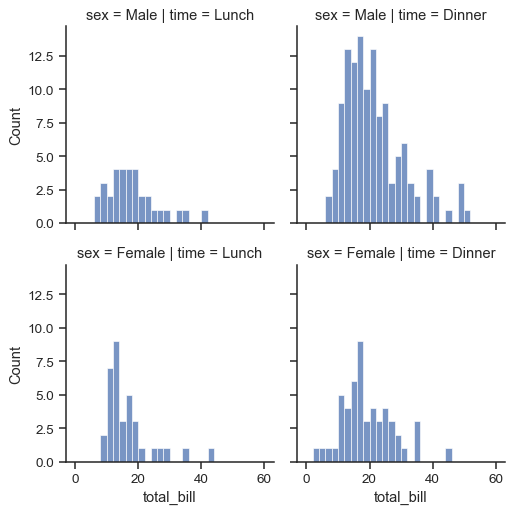
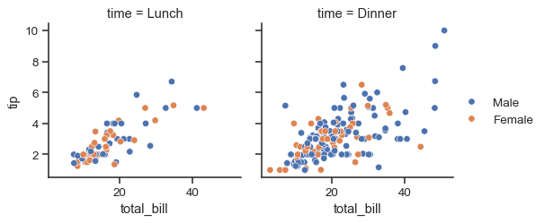

seaborn.FacetGrid.__init__#
- FacetGrid.__init__(data, *, row=None, col=None, hue=None, col_wrap=None, sharex=True, sharey=True, height=3, aspect=1, palette=None, row_order=None, col_order=None, hue_order=None, hue_kws=None, dropna=False, legend_out=True, despine=True, margin_titles=False, xlim=None, ylim=None, subplot_kws=None, gridspec_kws=None)#
Initialize the matplotlib figure and FacetGrid object.
This class maps a dataset onto multiple axes arrayed in a grid of rows and columns that correspond to levels of variables in the dataset. The plots it produces are often called “lattice”, “trellis”, or “small-multiple” graphics.
It can also represent levels of a third variable with the
hueparameter, which plots different subsets of data in different colors. This uses color to resolve elements on a third dimension, but only draws subsets on top of each other and will not tailor thehueparameter for the specific visualization the way that axes-level functions that accepthuewill.The basic workflow is to initialize the
FacetGridobject with the dataset and the variables that are used to structure the grid. Then one or more plotting functions can be applied to each subset by callingFacetGrid.map()orFacetGrid.map_dataframe(). Finally, the plot can be tweaked with other methods to do things like change the axis labels, use different ticks, or add a legend. See the detailed code examples below for more information.Warning
When using seaborn functions that infer semantic mappings from a dataset, care must be taken to synchronize those mappings across facets (e.g., by defining the
huemapping with a palette dict or setting the data type of the variables tocategory). In most cases, it will be better to use a figure-level function (e.g.relplot()orcatplot()) than to useFacetGriddirectly.See the tutorial for more information.
- Parameters:
- dataDataFrame
Tidy (“long-form”) dataframe where each column is a variable and each row is an observation.
- row, col, huestrings
Variables that define subsets of the data, which will be drawn on separate facets in the grid. See the
{var}_orderparameters to control the order of levels of this variable.- col_wrapint
“Wrap” the column variable at this width, so that the column facets span multiple rows. Incompatible with a
rowfacet.- share{x,y}bool, ‘col’, or ‘row’ optional
If true, the facets will share y axes across columns and/or x axes across rows.
- heightscalar
Height (in inches) of each facet. See also:
aspect.- aspectscalar
Aspect ratio of each facet, so that
aspect * heightgives the width of each facet in inches.- palettepalette name, list, or dict
Colors to use for the different levels of the
huevariable. Should be something that can be interpreted bycolor_palette(), or a dictionary mapping hue levels to matplotlib colors.- {row,col,hue}_orderlists
Order for the levels of the faceting variables. By default, this will be the order that the levels appear in
dataor, if the variables are pandas categoricals, the category order.- hue_kwsdictionary of param -> list of values mapping
Other keyword arguments to insert into the plotting call to let other plot attributes vary across levels of the hue variable (e.g. the markers in a scatterplot).
- legend_outbool
If
True, the figure size will be extended, and the legend will be drawn outside the plot on the center right.- despineboolean
Remove the top and right spines from the plots.
- margin_titlesbool
If
True, the titles for the row variable are drawn to the right of the last column. This option is experimental and may not work in all cases.- {x, y}lim: tuples
Limits for each of the axes on each facet (only relevant when share{x, y} is True).
- subplot_kwsdict
Dictionary of keyword arguments passed to matplotlib subplot(s) methods.
- gridspec_kwsdict
Dictionary of keyword arguments passed to
matplotlib.gridspec.GridSpec(viamatplotlib.figure.Figure.subplots()). Ignored ifcol_wrapis notNone.
See also
Examples
Note
These examples use seaborn functions to demonstrate some of the advanced features of the class, but in most cases you will want to use figue-level functions (e.g.
displot(),relplot()) to make the plots shown here.Calling the constructor requires a long-form data object. This initializes the grid, but doesn’t plot anything on it:
tips = sns.load_dataset("tips") sns.FacetGrid(tips)
Assign column and/or row variables to add more subplots to the figure:
sns.FacetGrid(tips, col="time", row="sex")
To draw a plot on every facet, pass a function and the name of one or more columns in the dataframe to
FacetGrid.map():g = sns.FacetGrid(tips, col="time", row="sex") g.map(sns.scatterplot, "total_bill", "tip")
The variable specification in
FacetGrid.map()requires a positional argument mapping, but if the function has adataparameter and accepts named variable assignments, you can also useFacetGrid.map_dataframe():g = sns.FacetGrid(tips, col="time", row="sex") g.map_dataframe(sns.histplot, x="total_bill")
Notice how the bins have different widths in each facet. A separate plot is drawn on each facet, so if the plotting function derives any parameters from the data, they may not be shared across facets. You can pass additional keyword arguments to synchronize them. But when possible, using a figure-level function like
displot()will take care of this bookkeeping for you:g = sns.FacetGrid(tips, col="time", row="sex") g.map_dataframe(sns.histplot, x="total_bill", binwidth=2, binrange=(0, 60))
The
FacetGridconstructor accepts ahueparameter. Setting this will condition the data on another variable and make multiple plots in different colors. Where possible, label information is tracked so that a single legend can be drawn:g = sns.FacetGrid(tips, col="time", hue="sex") g.map_dataframe(sns.scatterplot, x="total_bill", y="tip") g.add_legend()
When
hueis set on theFacetGrid, however, a separate plot is drawn for each level of the variable. If the plotting function understandshue, it is better to let it handle that logic. But it is important to ensure that each facet will use the same hue mapping. In the sampletipsdata, thesexcolumn has a categorical datatype, which ensures this. Otherwise, you may want to use thehue_orderor similar parameter:g = sns.FacetGrid(tips, col="time") g.map_dataframe(sns.scatterplot, x="total_bill", y="tip", hue="sex") g.add_legend()
The size and shape of the plot is specified at the level of each subplot using the
heightandaspectparameters:g = sns.FacetGrid(tips, col="day", height=3.5, aspect=.65) g.map(sns.histplot, "total_bill")
If the variable assigned to
colhas many levels, it is possible to “wrap” it so that it spans multiple rows:g = sns.FacetGrid(tips, col="size", height=2.5, col_wrap=3) g.map(sns.histplot, "total_bill")
To add horizontal or vertical reference lines on every facet, use
FacetGrid.refline():g = sns.FacetGrid(tips, col="time", margin_titles=True) g.map_dataframe(sns.scatterplot, x="total_bill", y="tip") g.refline(y=tips["tip"].median())
You can pass custom functions to plot with, or to annotate each facet. Your custom function must use the matplotlib state-machine interface to plot on the “current” axes, and it should catch additional keyword arguments:
import matplotlib.pyplot as plt def annotate(data, **kws): n = len(data) ax = plt.gca() ax.text(.1, .6, f"N = {n}", transform=ax.transAxes) g = sns.FacetGrid(tips, col="time") g.map_dataframe(sns.scatterplot, x="total_bill", y="tip") g.map_dataframe(annotate)
The
FacetGridobject has some other useful parameters and methods for tweaking the plot:g = sns.FacetGrid(tips, col="sex", row="time", margin_titles=True) g.map_dataframe(sns.scatterplot, x="total_bill", y="tip") g.set_axis_labels("Total bill ($)", "Tip ($)") g.set_titles(col_template="{col_name} patrons", row_template="{row_name}") g.set(xlim=(0, 60), ylim=(0, 12), xticks=[10, 30, 50], yticks=[2, 6, 10]) g.tight_layout() g.savefig("facet_plot.png")
You also have access to the underlying matplotlib objects for additional tweaking:
g = sns.FacetGrid(tips, col="sex", row="time", margin_titles=True, despine=False) g.map_dataframe(sns.scatterplot, x="total_bill", y="tip") g.figure.subplots_adjust(wspace=0, hspace=0) for (row_val, col_val), ax in g.axes_dict.items(): if row_val == "Lunch" and col_val == "Female": ax.set_facecolor(".95") else: ax.set_facecolor((0, 0, 0, 0))